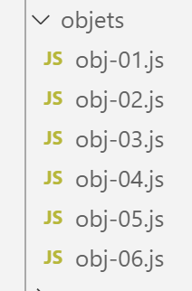

5. Literal objects
Here, we refer to objects defined literally in the code as ‘literal objects’. JavaScript has the concept of classes and class instance objects. Therefore, this is not the type of object we are discussing now.

5.1. script [obj-01]
Here we present the basic properties of literal objects. The main one is that the object is manipulated via a pointer.
'use strict';
// an empty object
const obj1 = {};
// we can dynamically create the object's properties
obj1.prop1 = "abcd";
console.log('obj1=', obj1);
// another property
obj1.prop2 = [1, 2, 3];
console.log("obj1=", obj1);
// another property with a different notation
obj1['prop3'] = true;
console.log("obj1=", obj1);
// obj1 is a reference to the object (pointer), not the object itself
const obj2 = obj1;
// obj2 and obj1 point to the same object
obj2.prop1 = "xyzt";
console.log("obj1=", obj1);
console.log("obj2=", obj2);
// Properties can be variables
const var1 = 'prop1';
console.log('prop1=', obj1[var1]);
Execution
[Running] C:\myprograms\laragon-lite\bin\nodejs\node-v10\node.exe "c:\Temp\19-09-01\javascript\objects\obj-01.js"
obj1=[object Object]
obj1= { prop1: 'abcd', prop2: [ 1, 2, 3 ] }
obj1= { prop1: 'abcd', prop2: [ 1, 2, 3 ], prop3: true }
obj1 = { prop1: 'xyzt', prop2: [1, 2, 3], prop3: true }
obj2 = { prop1: 'xyzt', prop2: [1, 2, 3], prop3: true }
prop1 = xyzt
Comments
- Line 3 of the code: An object is manipulated via a pointer. Therefore, [obj1] is a pointer. Modifying the object pointed to does not modify the pointer [obj1]. This is why, as with arrays, an object reference is declared using the [const] keyword;
- Line 6 of the code: As with arrays, [console.log] can display objects;
- Line 11 of the code: obj1.prop3 can be rewritten as obj1.[‘prop3’]. This latter notation is useful when ‘prop3’ is actually a variable (lines 20–21);
- lines 13–18 of the code: show that the statement [obj2=obj1] is a copy of the object reference and not of the object itself;
5.2. script [obj-02]
This script demonstrates that an object’s properties can have an object as their value. This results in multi-level objects. We also introduce the global object [JSON], which enables object-to-string and string-to-object conversions.
'use strict';
// a multi-level object
const person = {
firstName: "martin",
age: 12,
father: {
firstName: "Paul",
age: 45
},
mother: {
first_name: "micheline",
age: 42
}
}
// access properties
console.log("person's first name=", person.firstName);
console.log("mother's first name=", person.mother.firstName);
person.mother.age = 40;
console.log("mother's age=", person.mother.age);
// console.log can display objects
console.log("person=", person);
console.log("mother=", person.mother);
// we can also display the object's JSON string
let json = JSON.stringify(person);
console.log("JSON=", json);
// We can parse the JSON
let person2 = JSON.parse(json);
console.log("father=", person2.father);
Comments
- line 24: converting a JavaScript object to a JSON string;
- line 27: converting a JSON string into a JavaScript object;
Execution
[Running] C:\myprograms\laragon-lite\bin\nodejs\node-v10\node.exe "c:\Temp\19-09-01\javascript\objects\obj-02.js"
person's first name = martin
mother's first name = Micheline
mother's age= 40
person= { 'first_name': 'martin',
'age': 12,
'father': { 'first_name': 'Paul', 'age': 45 },
'mother': { 'first_name': 'Micheline', 'age': 40 } }
mother = { 'first_name': 'micheline', 'age': 40 }
jSON = {"firstName": "martin", "age": 12, "father": {"firstName": "paul", "age": 45}, "mother": {"firstName": "micheline", "age": 40}}
father = { 'first_name': 'paul', 'age': 45 }
Comments
- line 10: in a JSON string, properties must be enclosed in quotes, as must string values;
5.3. script [obj-03]
This script introduces the concept of getters and setters for an object's property:
'use strict';
// getters and setters of an object
const person = {
// getter
get name() {
console.log("getter name");
return this._name;
},
// setter
set name(aName) {
console.log("setter name");
this._name = aName;
}
};
// setter
person.name = "Hercules";
// getter
console.log(person.name);
// the object itself
console.log("person=", person);
// this doesn't prevent you from accessing the [_name] property directly
person._name = "xyz";
console.log("person=", person);
Comments
- lines 5–7: definition of a [getter], a function that generally returns the value of an object’s property but can actually return anything. The keyword [function] is replaced by the keyword [get];
- line 7: the getter returns the [_name] property. Note that this property does not need to be declared;
- lines 10–13: definition of a [setter], a function that generally assigns the received value to an object property but can actually do anything. The keyword [function] is replaced by the keyword [set]. The [setter] can be used to validate the value passed as a parameter to the [setter];
- line 16: the [set name] function will be called implicitly;
- line 18: the [get name] function will be called implicitly;
- line 22: shows that the use of getters/setters depends on the developer’s discretion. If the developer knows the name of the property managed by them, they can access it directly;
Execution
[Running] C:\myprograms\laragon-lite\bin\nodejs\node-v10\node.exe "c:\Temp\19-09-01\javascript\objets\obj-03.js"
setter name
getter name
Hercule
person = { name: [Getter/Setter], _name: 'Hercule' }
person = { name: [Getter/Setter], _name: 'xyz' }
Note lines 5–6: [console.log] also displays properties that are functions.
5.4. script [obj-04]
This script shows three ways to write the names of an object's properties and two ways to access them.
'use strict';
// The names of an object's properties can be literals [name], enclosed in single quotes ['name']
// or double quotes ["name"]
// literals
const obj1 = {
lastName: "martin",
firstName: "jean"
};
console.log("first_name=", obj1.first_name);
// enclosed in single quotes
const obj2 = {
'lastName': "martin",
'firstName': "jean"
};
console.log("lastName=", obj2.lastName);
// enclosed in quotes
const obj3 = {
"lastName": "martin",
"firstName": "jean"
};
// two possible ways to access the [lastName] property
console.log("lastName=", obj3.lastName);
console.log("lastName=", obj3['lastName']);
Execution
[Running] C:\myprograms\laragon-lite\bin\nodejs\node-v10\node.exe "c:\Temp\19-09-01\javascript\objects\obj-04.js"
firstName=jean
lastName= martin
lastName= martin
last_name= martin
5.5. script [obj-05]
The script shows that the properties of a literal object can be functions. This is very similar to a class instance object, which has properties and methods.
'use strict';
// an object can have properties of type [function]
const person = {
// properties
firstName: "martin",
age: 12,
father: {
first_name: "paul",
age: 45
},
mother: {
first_name: "micheline",
age: 42
},
// method
toString: function () {
return JSON.stringify(this);
}
}
// usage
console.log("person=", person);
console.log("person.toString=", person.toString());
- lines 17–19: an internal method of the object. In this method, we access the object’s properties using the keyword [this] (line 18). [this] refers to the object itself, and [this.firstName] refers to its [firstName] property;
Execution
[Running] C:\myprograms\laragon-lite\bin\nodejs\node-v10\node.exe "c:\Temp\19-09-01\javascript\objects\obj-05.js"
person = { 'firstName': 'martin',
'age': 12,
'father': { 'firstName': 'paul', 'age': 45 },
'mother': { 'firstName': 'micheline', 'age': 42 },
toString: [Function: toString] }
person.toString = {"firstName":"martin","age":12,"father":{"firstName":"paul","age":45},"mother":{"firstName":"micheline","age":42}}
5.6. script [obj-06]
This script demonstrates how to access an object's properties when their names are not known in advance.
'use strict';
// An object can have properties of type [function]
let person = {
// properties
firstName: "martin",
age: 12,
father: {
first_name: "paul",
age: 45
},
mother: {
first_name: "micheline",
age: 42
},
// method
toString: function () {
return JSON.stringify(this);
}
}
// usage
console.log(person);
// properties
console.log("-----------------------");
for (const key in person) {
if (person.hasOwnProperty(key)) {
const element = person[key];
console.log(key, "=", element);
}
}
// to bypass the ESLint warning (1)
console.log("-----------------------");
for (const key in person) {
if (Object.prototype.hasOwnProperty.call(person, key)) {
const element = person[key];
console.log(key, "=", element);
}
}
// to bypass the ESLint warning (2)
console.log("-----------------------");
for (const key in person) {
// eslint-disable-next-line no-prototype-builtins
if (person.hasOwnProperty(key)) {
const element = person[key];
console.log(key, "=", element);
}
}
Comments
- lines 26–31: the code that retrieves the list of properties (excluding methods) of an object. This code triggers an ESLint warning:

- lines 32–39: the code that allows us to bypass the ESLint warning. We use the prototype of the [Object] class;
- lines 41–47: or we can simply disable the warning (line 43);
5.7. script [obj-07]
The [obj-07] script demonstrates the ability to destruct an object:
'use strict';
// destructuring
// literals
const obj1 = {
name: "martin",
first_name: "jean"
};
// unpacking obj1 into variables [n, p]
const { lastName: n, firstName: p } = obj1;
console.log("n=", n, "p=", p);
// Destructuring obj1 into variables [n2, p2]
function f({ lastName: n2, firstName: p2 }) {
console.log("f-n2=", n2, "f-p2=", p2);
}
f(obj1);
// destructuring obj1 into variables [lastName, firstName]
function g({ lastName: lastName, firstName: firstName }) {
console.log("g-lastName=", lastName, "g-firstName=", firstName);
}
g(obj1);
// destructuring obj1 into variables [lastName, firstName]
// using shorthand notation equivalent to h({lastName:lastName, firstName:firstName})
function h({ lastName, firstName }) {
console.log("h-lastName=", lastName, "h-firstName=", firstName);
}
h(obj1);
Comments
- line 11: the curly braces {} enable destructuring. The syntax
const { lastName: n, firstName: p } = obj1
creates two variables [n] and [p] and is equivalent to:
const n = obj1.lastName
const p = obj1.firstName
The declaration could be written as follows:
const { lastName => n, firstName => p } = obj1
to indicate that the values of the attributes [lastName, firstName] go into the variables [n, p];
- the destructuring operation is repeated on lines 15, 21, and 28. Each time, the presence of curly braces {} indicates that an object will be destructured into variables;
- Line 28 might be confusing. It’s a shorthand for the notation:
function h({ lastName: lastName, firstName: firstName })
The results of the execution are as follows:
5.8. script [obj-08]
The script [obj-08] shows how to obtain a copy of an object:
'use strict'
// object cloning
const obj1 = {
name: "martin",
firstName: "jean"
};
// Clone (copy) of obj1 using the spread operator
const obj2 = { ...obj1 }
// checks
// obj2 points to a copy of obj1
console.log("obj2===obj1 :", obj1 === obj2)
console.log("obj2=", obj2)
- line 10: the operation to copy the object [obj1]. The ... operator is called the spread operator;
The results of the execution are as follows:
- line 1: shows that the references [obj1] and [obj2] do not point to the same object;
- line 2: shows that the object pointed to by [obj2] is a copy of the object pointed to by [obj1];
5.9. Conclusion
The scripts in this section have shown that the JavaScript literal object is similar to the class instance object in object-oriented languages. You can define properties, methods, and getters/setters on it. It is a dynamic object whose properties can be defined at runtime. It then behaves like a dictionary whose elements can be of any type, including the [function] type.